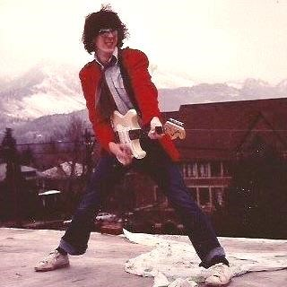

<template>
  <div class="page-content">
    <!-- The dimensions of the images are 950x300 -->
    <div id="musicSlide1">
        
    </div>
    <compose view-model="./commons/slideshow" containerless model.bind="slideshow_data"></compose>
    <div class="material-content elevation2">
      <p style="margin-top:10px;">Josh and Maria were married in July of 2012 and have been singing together
        for even longer. Whether it is at church, at the Rescue Mission, in a public venue or in the
        great outdoors, this couple will knock your socks off.
    <br><br>
      The Web Jam Band has been rehearsing regulaly since the beginning of 2017, with a performance at a summer wedding anniversary house party, followed by a second performance at the annual Bent Mountain Pig Roast.
    </p>
    <h4 style="text-align:center; margin-bottom:5px; margin-top:10px"><strong>Who are these classy people?</strong></h4>
    <table>
      <tr>
        <td style="text-align:center;background-color:#e6ffe6">
      <!-- <section id="main"> -->
        <a click.delegate="jump('joshbio')">
          
        </a>
        <p>Josh Sherman – rhythm guitarist and baritone vocalist</p>
      </td>
      <td style="text-align:center;background-color:#e6ffe6">
        <a click.delegate="jump('mariabio')">
          
        </a>
        <p>Maria Sherman – primo soprano and bass guitarist</p>
      </td>
    </tr>
    <tr>
        <td style="text-align:center;background-color:#e6ffe6">
          <a click.delegate="jump('brianbio')">
            
          </a>
          <p>Brian Lilienthal – our <strong><i>main</i></strong> drummer and remixer</p>
      </td>
        <td style="text-align:center;background-color:#e6ffe6">
          <a click.delegate="jump('emersonbio')">
            
          </a>
          <p>Emerson Harvey – lead guitarist and world traveler</p>
      </td>
    </tr>
  </table>
      <!-- </section><hr> -->
      <section>

        <h4>Josh Sherman</h4>
        <a id="joshbio">
          
        </a>
        <p style="text-align:left;">
          Josh began playing the trumpet when he was in third grade. He became skilled with the trumpet,
          continuing with his musical stylings through high school where he was first chair and regular
          soloist on the marching field. In college Josh studied music and picked up the guitar. He was
          primarily self-taught on the guitar, although he received help from his many musical relatives,
          especially his Uncle Mike. Josh went on to found several bands while living in central Florida.
          He recorded two cds and was played on the local radio stations. Josh also played in many
          venues including the Sun cruise casino ship and the Battle of the Bands. His career took a
          different turn when he moved to Virginia. Leaving his band behind, Josh played at the GE Pig
          roast several years and performed solo at Mill Mountain coffee shop and the 4th Street coffee
          shop. Josh started singing with Maria in the fall of 2011. They fell in love and were married
          in July of 2012. Vive l’amore!</p>
          <blockquote style="font-style: italic;text-align:left; margin-top:5px; font-size:9pt">
            <p>And whenever the harmful spirit from God was upon Saul, David took the lyre
              and played it with his hand. So Saul was refreshed and was well, and the harmful spirit
              departed from him. <strong>1 Samuel 16:23</strong></p></blockquote>
              <aside style="text-align:left; margin:auto; width:3in">
                <p>Instruments that Josh plays:</p>
                <ol>
                  <li>Lead vocals</li>
                  <li>Harmony vocals</li>
                  <li>Acoustic guitar</li>
                  <li>Electric guitar</li>
                  <li>Harmonica</li>
                  <li>Trumpet</li>
                  <li>kazoo</li>
                  <li>Air guitar</li>
                </ol>
              </aside>
              <hr>
              <article>
                <h4>Maria Sherman</h4>
                <p><a id="mariabio">
                  
                </a></p>
                <p style="text-align:left">Maria started her singing career at the age of 4 when she performed at the JaMar Rec
                  Center in St. Petersburg, Florida. Maria continued adding to her musical repertoire
                  by learning piano, alto saxophone, tenor saxophone, bassoon, and marching tenors.
                  She earned a minor in voice at Roanoke College and did a variety of chorus, musical theatre,
                  and solo performances while teaching in the Roanoke County Schools. Although classically
                  trained, Maria loves singing rock and Christian music with Josh, and hopes to add bass
                  guitar to her list of instruments soon. Josh is the most wonderful husband and is the driving
                  force for the couple; Maria is a fabulous wife and is the organization behind the duo.</p>
                  <blockquote style="font-style: italic;text-align:left; margin-top:5px; font-size:9pt">
                    <p>Whoever sings songs to a heavy heart is like one who takes off a garment on a cold
                      day, and like vinegar on soda.
                      <strong>Proverbs 25:20</strong>
                    </p>
                  </blockquote>
                  <aside style="text-align:left; margin:auto; width:3in">
                    <p>Instruments that Maria plays:</p>
                    <ol>
                      <li>Bass guitar</li>
                      <li>Lead vocals</li>
                      <li>Harmony vocals</li>
                      <li>Tamborine</li>
                      <li>Keyboard</li>
                      <li>Cups</li>
                      <li>Saxophone</li>
                      <li>Egg shacker</li>
                      <li>Triangle</li>
                      <li>Tri-tom</li>
                    </ol>
                  </aside>
                </article>
                    <hr>
                <article>
                  <h4>Brian Lilienthal</h4>
                  <a id="brianbio"> </a>
                    
                    <p style="max-width:98%; margin:auto; text-align:left">
                      Brian has been playing drums for 13 years and his main set is a Pearl Masters MCX. His favorite music is Ska music, and his drumming influences are Vinnie Fiorello from Less Than Jake, Chris Thatcher from Streetlight Manifesto, Travis Barker from Blink-182, Tre Cool from Green Day, and The Rabbit from Reel Big Fish. His man crushes are Roger Lima, Gerard Way, and Barack Obama. Looking for a nice girl between 23 and 29. Also, Go Hokies!</p>
                  </article>
                      <hr>
                  <article>
                    <h4>Emerson Harvey</h4>
                    <a id="emersonbio"> </a>
                      
                      <p style="max-width:98%; margin:auto; text-align:left">In 1969, I was 12 years old, I heard Jimi Hendrix on the radio and decided I had to learn to play guitar. Self taught for 48 years now. Play lead and rhythm guitar. Favorite axe is still a Fender Stratocaster!
                        Influences: Jimi Hendrix, Rolling Stones, Sex Pistols, Ramones, X, Talking Heads, BB King, Buddy Guy, Neil Young……. Can work a harmonica and acoustic guitar on demand.
                      </p>
                      
                    </article>
              </section>
            </div>
          </div>
        </template>
